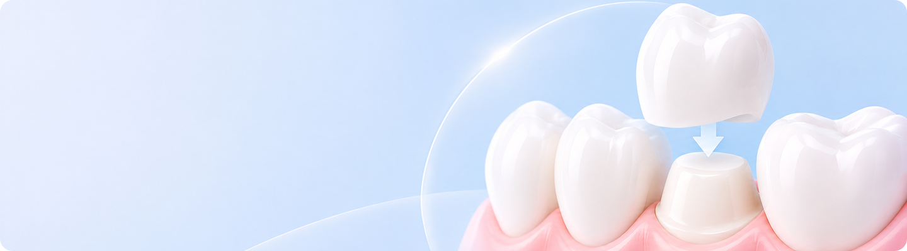
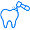
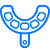
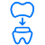
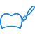

올세라믹이란?
치아의 색, 모양, 크기, 배열을 개선하면서 손상된 치아의 기능을 회복하는 데 사용됩니다.
다만 치아 표면 일부만 덮는 라미네이트와 달리
치아를 비교적 많이 삭제하고 전체를 덮는 방식이라는 점에서 구분됩니다.

치아 색과 유사한 세라믹 형태로
치아의 형태와 기능 회복을 돕습니다.
이런경우 올세라믹를 고려할 수 있어요
-
 치아가 넓게 손상된 분
치아가 넓게 손상된 분
-
치아의 변색이 심한 분
-
치아가 부러지거나 깨진 분
-
신경치료 후 치아가 약해진 분
올세라믹 치료과정
-

- 상태 진단
- 치아의 상태와 특징을 확인하고 적합한,
치료 방법을 계획합니다.
-

- 치아 다듬기
- 치아를 필요한 만큼
다듬습니다.
-

- 치아 본뜨기
- 치아와 주변 잇몸 형태를
확인하기 위해 본을 뜨거나
디지털 스캔을 진행합니다.
-

- 임시 치아 장착
- 올세라믹이 완성될 때까지
치아를 보호하기 위해
임시 치아를 장착합니다.
-

- 올세라믹 제작
- 체취한 치아 본을 바탕으로
형태에 맞는 올세라믹을
제작합니다.
-

- 장착 · 점검
- 색상과 모양, 밀착 상태를,
확인한 후 고정합니다.
-
- 상태 진단
- 치아의 상태와 특징을 확인하고 적합한
치료 방법을 계획합니다.
-
- 마무리 · 점검
- 색상과 모양, 밀착 상태를,
확인한 후 고정합니다.
※ 치료 과정과 소요 기간은 개인의 치아 상태에 따라 달라질 수 있습니다.
올세라믹 치료 후 주의 사항
-
- 01 단단 & 질긴 음식 피하기
- 치료 직후에는 보철물 파손 위험이 있으므로 견과류, 오징어 등 딱딱하거나 질긴 음식 섭취를 피해주세요.
- 02 이갈이 · 이 악물기 주의
- 무의식적인 이갈이나 이를 꽉 무는 습관은
정보철물에 손상을 줄 수 있어 필요시 마우스피스 착용을 권장해요.
- 03 구강 위생 관리
- 보철물 주위에 치태와 음식물이 남기 쉬우므로,
정기적으로 치과 검진을 받고 구강 위생을 관리해주세요.